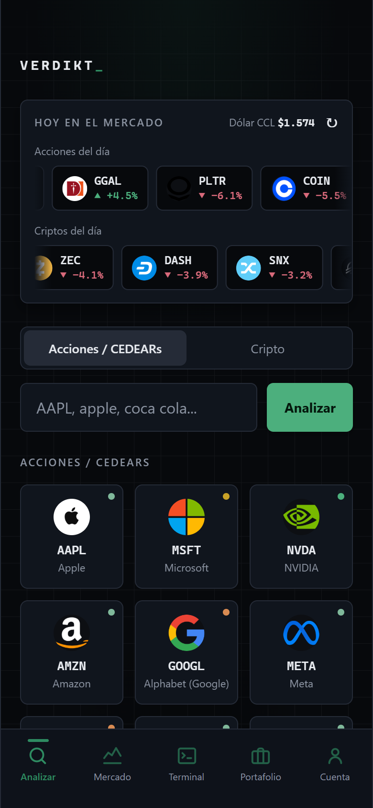
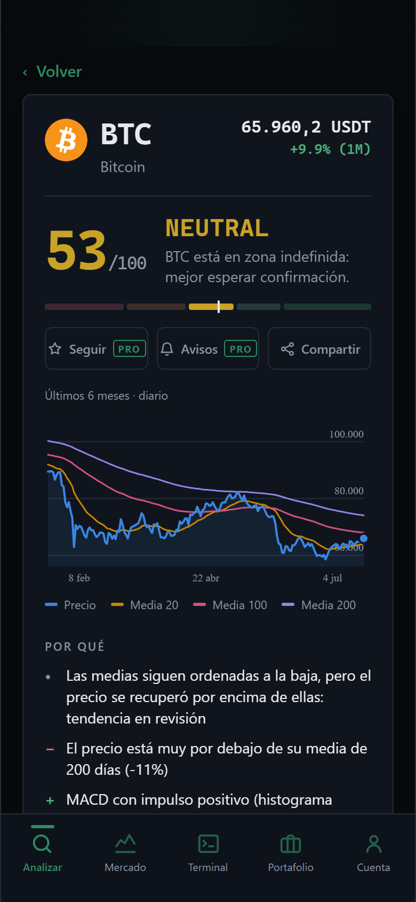
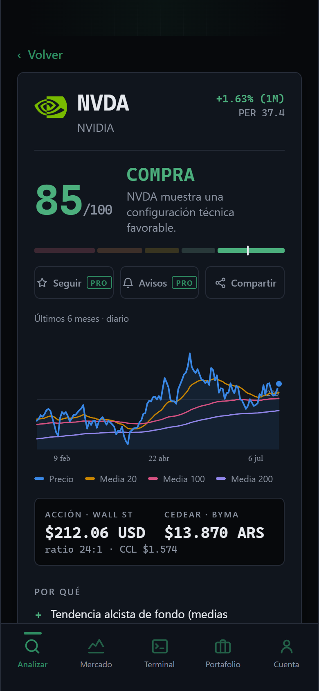
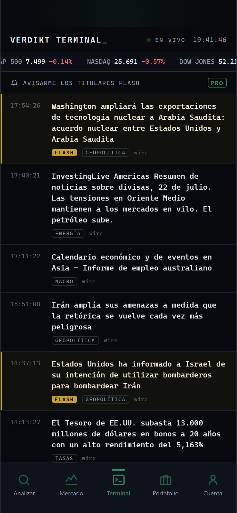

¿Comprar, acumular o evitar?
Verdikt analiza cada cripto y cada CEDEAR para darte un veredicto claro: un puntaje de 0 a 100 con las razones detrás. Sin señales mágicas, sin humo — datos técnicos explicados para que cualquiera los entienda.

Toda la decisión en una sola pantalla
Un puntaje, no veinte indicadores
El motor cruza tendencia, medias móviles, RSI, MACD, volumen y soportes para darte un solo número de 0 a 100 — y te muestra los porqués, uno por uno, en castellano.
Pensada para invertir desde Argentina
Más de 100 activos: Bitcoin y las principales criptos, y las acciones que se compran como CEDEAR — con el ratio de conversión y el precio en pesos al dólar CCL del día.
Watchlist, alertas y portafolio
Seguí tus activos, recibí avisos cuando tocan tu precio, cargá tu cartera y mirá cómo evoluciona día a día. La app registra qué dijo antes, para que puedas comprobarlo.
Capturas reales, datos reales



De la duda al veredicto en tres pasos
Elegí un activo
Buscalo por nombre o ticker: Bitcoin, NVIDIA, MercadoLibre, Tesla... o mirá los movers del día en la portada.
El motor lo analiza
Tendencia de fondo, medias de 20/50/200 días, RSI, MACD, volumen y niveles de soporte y resistencia — todo con datos del día.
Leé el veredicto
Un puntaje de 0 a 100, la palabra justa — de COMPRA a EVITAR — y cada razón explicada. Vos decidís, pero informado.
Cinco palabras, cero ambigüedad
Empezá gratis, pasate a Pro cuando quieras seguirlo de cerca
- Veredicto y análisis completo de los más de 100 activos
- Gráfico de 6 meses con la media de 200 días
- Movers del día y cambios de veredicto
- Terminal de titulares del mercado en vivo
- Portafolio de hasta 5 posiciones
- Todo lo del plan gratis
- Watchlist: seguí los activos que te importan
- Aviso cuando cambia el veredicto de un activo seguido
- Alertas de precio: avisa cuando toca tu nivel
- Portafolio sin límite de posiciones
Lo que la gente pregunta antes de empezar
¿Qué es un CEDEAR y cómo lo analiza Verdikt?
¿Conviene comprar Bitcoin ahora?
¿Cómo sé si conviene comprar un CEDEAR o una acción?
¿Qué significa el puntaje de 0 a 100?
¿Qué es el ratio de conversión y el dólar CCL?
¿Verdikt da recomendaciones de inversión?
Probala ahora, gratis y sin registro
Abrís la app, escribís un ticker y en segundos tenés el veredicto.
Abrir Verdikt